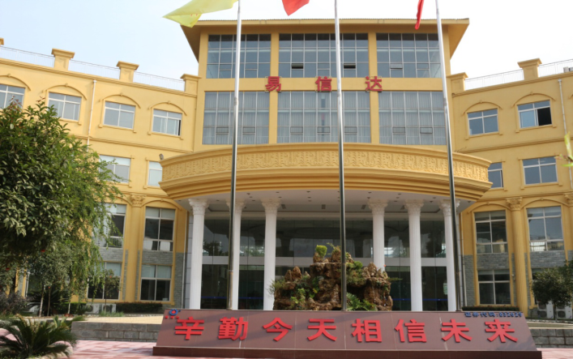

公司简介

成都易信达科技股份有限公司于2006年8月成立，位于四川省新津县工业园区A区359号，占地面积65亩，总投资1.20亿元，注册资本金6000万元，产品注册商标“易信达”,公司于2015年6月11日正式在北交所挂牌上市。股票代码为：832629
公司已通过ISO9001：2008质量管理体系认证和ISO14001环境体系认证，并于2013年获得国家高新技术企业证书。公司目前分为两个事业部：新材料事业部和智能仪表事业部，年销售额亿元以上。公司现有员工308人，其中智能仪表事业部研发团队有30余人。
公司智能仪表事业部主要从事机械水表、智能水表及系统等系列产品研发、生产、销售、服务，拥有自己的技术研发中心并已取得成都市颁发的成都市企业技术中心证书，目前已取得6项发明专利、28项实用型专利、14项计算机软件著作权。公司拥有国内一流的生产与科研设备，智能水表年生产能力120万只以上。智能水表的所有管理软件都属于自行研发，具有自主知识产权。
易信达始终秉承“产品、信誉、客户”的市场理念，永怀“吃水不忘挖井人”的感恩之心，以及严格贯彻执行“人无我有，人有我优”的质量理念；不断完善产品和开发新产品、不断向智能水表高科技领域探索、不断创造先进优质产品，以技术、质量、服务满足广大客户的需求，为中国的经济建设和社会发展献出力量、做出贡献；从而实现易信达人的“不求五百强，但求五百年”的经营理念。